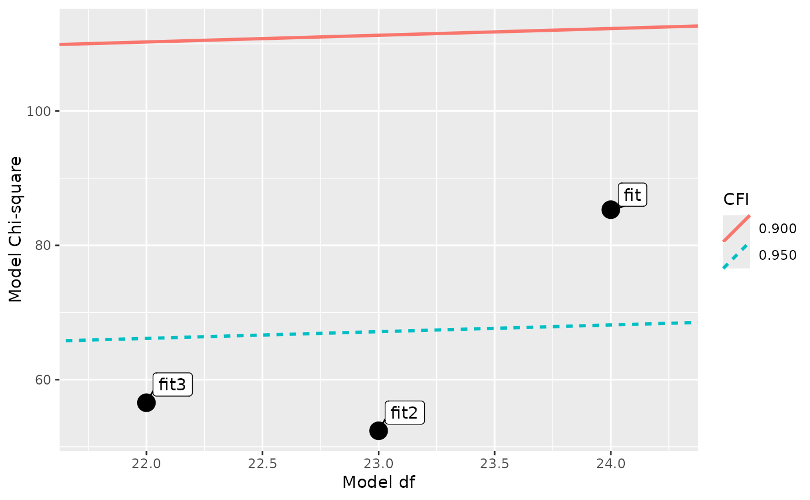
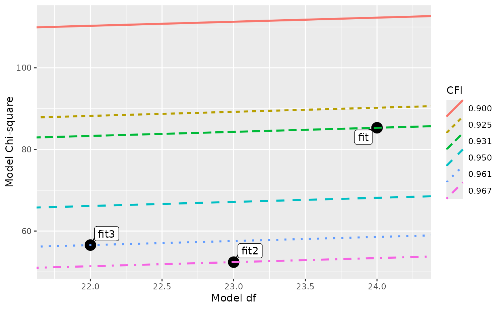
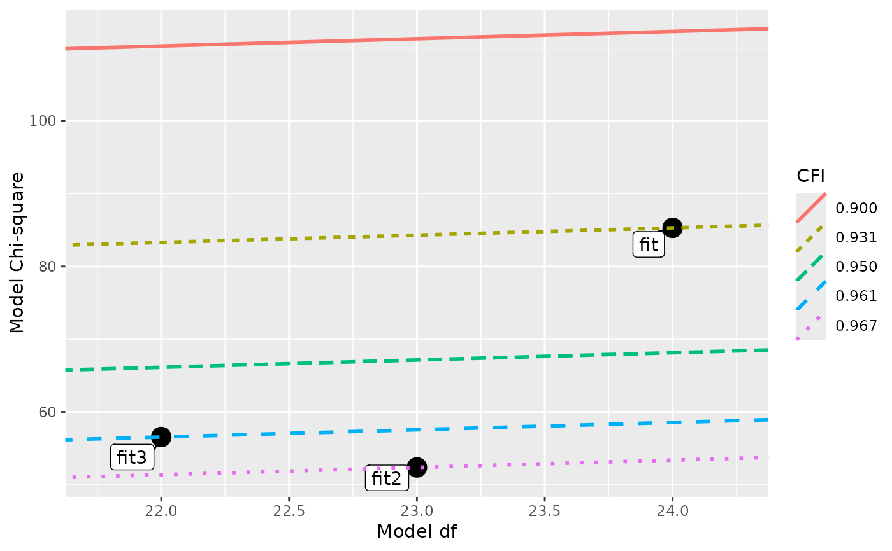
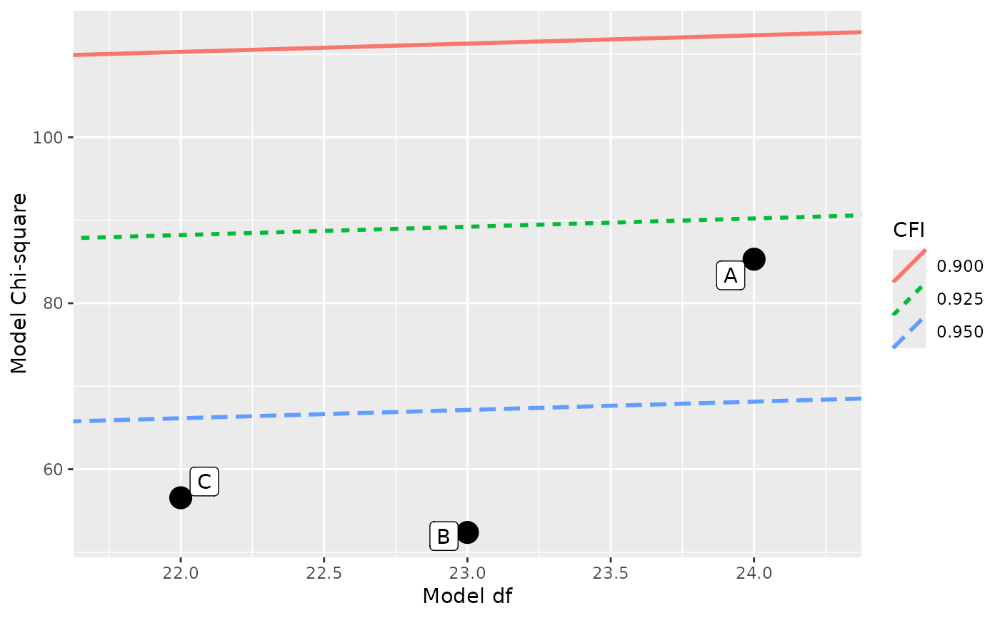
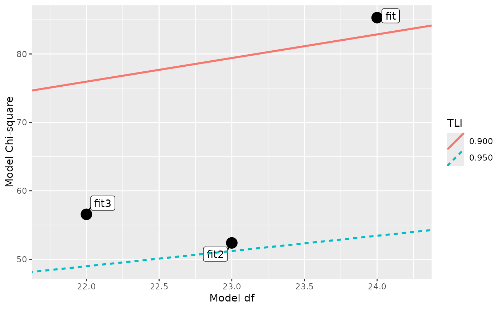
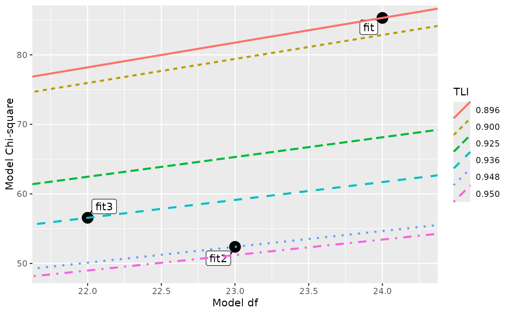
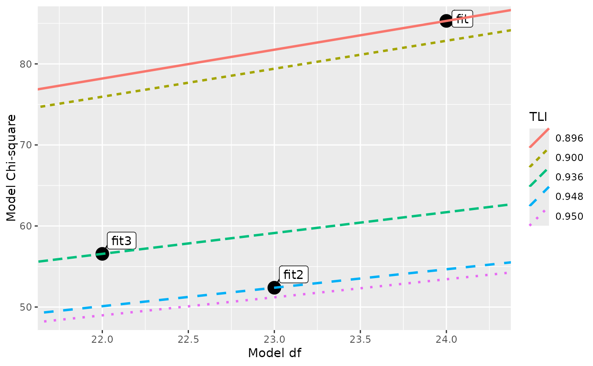
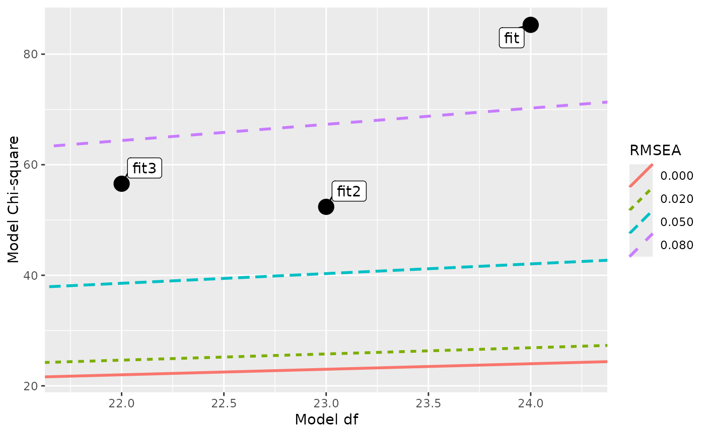
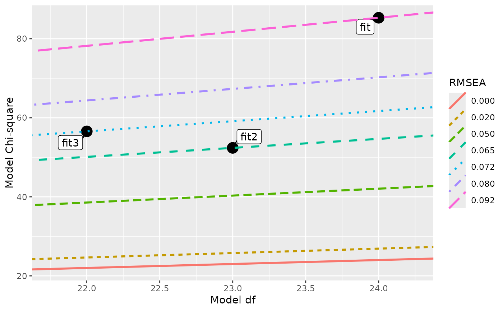

Plot models on a graph with model chi-square against model the degrees of freedom, with lines for equal fit measures.
Usage
plot_models_fm(
...,
fit_measure = c("cfi", "tli", "rmsea"),
fit_values,
line_size = 1,
label_size = 8,
point_size = 5,
position_dodge = 0.5,
include_model_values = FALSE,
include_baseline = FALSE
)Arguments
- ...
The lavaan::lavaan objects to be plotted. Can also be a named list of the lavaan::lavaan objects. If it is as list, it must be named and the names will be used in the plot.
- fit_measure
A length-one character vector of the fit measures to use to plot the lines. Only supports
"cfi"(the default),"tli", and"rmsea".- fit_values
A numeric vector of the values of the fit measure used to plot the lines. The default values are
c(.90, .95)for"cfi"and"tli", andc(.00, .02, .05, .08)for"rmsea".- line_size
The size of the lines. Default is 1.
- label_size
The size of the model names. Default is 8.
- point_size
The size of the point representing a model. Default is 2.
- position_dodge
Offsetting the label of a model from the point. Default is .5. Used by
ggrepel::geom_label_repel().- include_model_values
If
TRUE, the values of the models onfit_measurewill be added tofit_values. Default isFALSE.- include_baseline
If
TRUE, the baseline model is included in the plot. Default isFALSE.
Value
Return a ggplot2::ggplot()
output that can be further modified.
Details
This function plots models based on their model chi-squares and model degrees of freedoms.It can also add lines for chi-square-df combination with equal values on selected fit measures. Currently supports CFI, TLI, and RMSEA.
Author
Shu Fai Cheung https://orcid.org/0000-0002-9871-9448
Examples
library(lavaan)
# From the help page of modificationIndices
HS.model <- '
visual =~ x1 + x2 + x3
textual =~ x4 + x5 + x6
speed =~ x7 + x8 + x9
'
fit <- cfa(HS.model, data = HolzingerSwineford1939)
modindices(fit, sort = TRUE, op = "=~")
#> lhs op rhs mi epc sepc.lv sepc.all sepc.nox
#> 30 visual =~ x9 36.411 0.577 0.519 0.515 0.515
#> 28 visual =~ x7 18.631 -0.422 -0.380 -0.349 -0.349
#> 33 textual =~ x3 9.151 -0.272 -0.269 -0.238 -0.238
#> 31 textual =~ x1 8.903 0.350 0.347 0.297 0.297
#> 26 visual =~ x5 7.441 -0.210 -0.189 -0.147 -0.147
#> 36 textual =~ x9 4.796 0.138 0.137 0.136 0.136
#> 29 visual =~ x8 4.295 -0.210 -0.189 -0.187 -0.187
#> 35 textual =~ x8 3.359 -0.121 -0.120 -0.118 -0.118
#> 27 visual =~ x6 2.843 0.111 0.100 0.092 0.092
#> 38 speed =~ x2 1.580 -0.198 -0.123 -0.105 -0.105
#> 25 visual =~ x4 1.211 0.077 0.069 0.059 0.059
#> 39 speed =~ x3 0.716 0.136 0.084 0.075 0.075
#> 42 speed =~ x6 0.273 0.044 0.027 0.025 0.025
#> 41 speed =~ x5 0.201 -0.044 -0.027 -0.021 -0.021
#> 34 textual =~ x7 0.098 -0.021 -0.021 -0.019 -0.019
#> 32 textual =~ x2 0.017 -0.011 -0.011 -0.010 -0.010
#> 37 speed =~ x1 0.014 0.024 0.015 0.013 0.013
#> 40 speed =~ x4 0.003 -0.005 -0.003 -0.003 -0.003
fit2 <- update(fit, add = "visual =~ x9")
fit3 <- update(fit, add = "textual =~ x3\nvisual =~ x7")
models <- list(Initial = fit,
Model_2 = fit2,
Model_3 = fit3)
fit_cfi <- sapply(models, fitMeasures, fit.measures = "cfi")
fit_tli <- sapply(models, fitMeasures, fit.measures = "tli")
fit_rmsea <- sapply(models, fitMeasures, fit.measures = "rmsea")
# Supply the models as arguments
plot_models_fm(fit, fit2, fit3)

# Plot lines for selected values on a fit measure (CFI by default)
plot_models_fm(fit, fit2, fit3, fit_values = c(.90, .925, .95, fit_cfi))

# Plot the models' values on the fit measures
plot_models_fm(fit, fit2, fit3, include_model_values = TRUE)

# Supply the models as a named list
plot_models_fm(list(A = fit, B = fit2, C = fit3),
fit_values = c(.90, .925, .95))

# Plot the models, fit measure set to TLI
plot_models_fm(fit, fit2, fit3, fit_measure = "tli")

plot_models_fm(fit, fit2, fit3, fit_measure = "tli",
fit_values = c(.90, .925, .95, fit_tli))

plot_models_fm(fit, fit2, fit3, fit_measure = "tli",
include_model_values = TRUE)

# Plot the models, fit measure set to RMSEA
plot_models_fm(fit, fit2, fit3, fit_measure = "rmsea")

plot_models_fm(fit, fit2, fit3, fit_measure = "rmsea",
include_model_values = TRUE)
